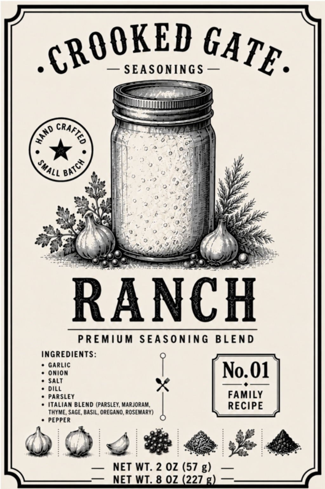

Our Story
Made for the Table.
Some recipes are written down. Some are remembered. And some become the meals everybody asks you to make again.
Crooked Gate is a collection of small-batch seasoning blends made for real kitchens, shared meals, and recipes worth keeping.
From Our Table
Start with the blend, find something good to make, and make it your own. As the collection grows, so will the recipes and meal ideas that go with each number.